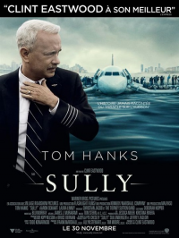

17 SULLY
- Critique
- Biopic

Le commandant Chesley Sullenberger est devenu une grande star quand, le 15 janvier 2009, il a réussi à poser son avion en détresse sur l’Hudson River avec plus de cent-cinquante passagers à bord. Derrière le fameux « Miracle sur l’Hudson » se cache aussi l’histoire d’une enquête menée ensuite qui a menacé très sérieusement la réputation de Sully.
Grâce à une construction très intelligente et une réalisation hyper maitrisée, Sully évite tous les pièges du biopic traditionnel et se trouve être un film d’une grande puissance. Le long métrage brasse même peut-être un peu trop de sujets dans un temps finalement très court. Tom Hanks, lui, est parfait dans le rôle titre.
- Timothée
- 06.12.2016, 20:30

 Emad et Rana forment un jeune couple iranien plutôt moderne puisque tous deux jouent dans une troupe de théâtre. Alors qu’ils doivent quitter leur appartement du fait de travaux qui menacent l’immeuble, ils trouvent une solution de repli dans un nouveau logement. Mais le passé de l’ancienne locataire va brutalement refaire surface et mettre le couple à l’épreuve.
Emad et Rana forment un jeune couple iranien plutôt moderne puisque tous deux jouent dans une troupe de théâtre. Alors qu’ils doivent quitter leur appartement du fait de travaux qui menacent l’immeuble, ils trouvent une solution de repli dans un nouveau logement. Mais le passé de l’ancienne locataire va brutalement refaire surface et mettre le couple à l’épreuve.